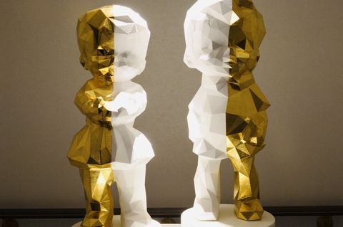
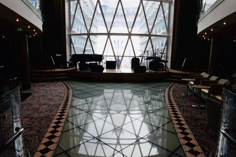
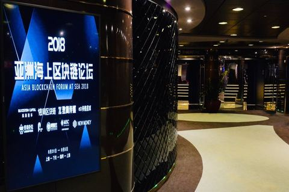
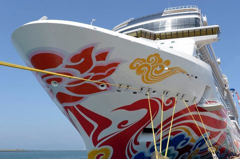
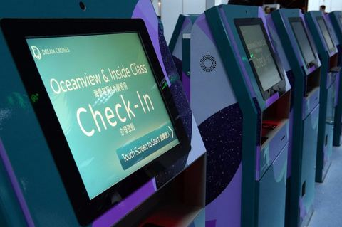
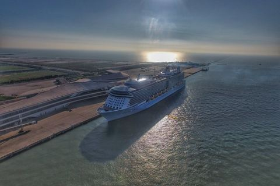
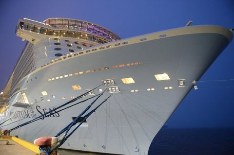
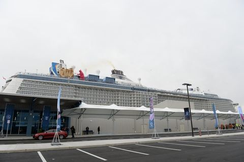
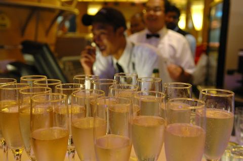

之前加勒比对我来说只能算是一个符号，或者是一个邮轮公司的名字，我因为加勒比而了解邮轮，但也因为加勒比对远方产生了莫名的好奇。这是一次临时决定的旅行，因为看到有一个关于西加勒比的线路，但是报不上名了，所以就决定自己动手来个自由行。…
147 张照片 →
一期一会(いちごいちえ)是由日本茶道发展而来的词语。在茶道里，指表演茶道的人会在心里怀着“难得一面，世当珍惜”的心情来诚心礼遇面前每一位来品茶的客人。人的一生中可能只能够和对方见面一次，因而要以最好的方式对待对方。这样的心境中也包含着日本传…
68 张照片 →
诺唯真喜悦号自己的图片已经拍的很好了，但是作为一个首航体验（摄影）师，还是愿意自己一睹为快，有把自己眼中看到的真实的喜悦号记录下来的冲动！ 作为世界三大邮轮公司之一的诺唯真游轮，第一次进入中国就来了一条亚洲最大船，和赞礼量子是同一级别，也足…
176 张照片 →

皇家加勒比海洋赞礼号终于来了，最新最大的船在天津首航，绝对是空前的。作为皇家加勒比旗下第一艘专为中国游客打造的游轮，赞礼号上充满了中国元素。 感谢皇家加勒比国际游轮公司给了官方航拍的大图，让这个记录完整起来！ 大叔我曾是量子号2014年…
67 张照片 →
受邀参加皇家加勒比海洋量子号的首航仪式，活动名为量子狂欢夜，可以说是中国邮轮界的一个大事，全国的代理商、媒体、合作伙伴以及相关的政府官员齐聚上海，迫不及待地要一睹海洋量子号的真面目………
30 张照片 →
皇家加勒比海洋量子号是目前世界上最新最高科技的豪华邮轮，我有幸成为首航的体验师，先上图文字会后补，图您明白的就说明看懂了，不明白的请提问！…
455 张照片 →